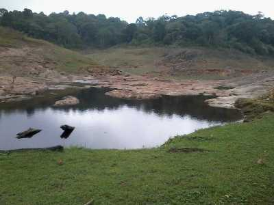

PATHANAMTHITTA
Perunthenaruvi Waterfall

A natural waterfall with captivating surroundings is situated on the banks of the River Pamba. The fall is 60 to 100 ft deep which pours down on a rocky bed. The place is a favourite picnic spot among locals as well as tourists.
Gavi
One of the most beautiful places in India, Gavi is a small village tucked between tea estates and wide and dense forests. A unique project in itself, the place is a model of eco-tourism site bringing to the world its spellbinding abundance in flora and fauna. Gavi is situated some 14 km away from the famed Periyar Tiger Reserve and is heaven on Earth, quite literally. This ambitious eco-tourism project of the Kerala Forest Development Corporation, Gavi has caught the eye of the world for its excellent model and use of local people for conservation & tourism.
Thriveni Sangamam

Situated on the way to Sabarimala, the Thriveni Sanganam as the name suggests is the point where the Holy Pamba River meets with the Manimala River in its north and with the Achankovil River in the south. The devotees stop here to take a dip in the holy water to wash away their sins. Millions of visitors also come here to enjoy the beautiful landscape of the place. The Pamba River, also known as the Dakshina Ganga or the Ganges of South India, is the third longest river in the southern part of the country which begins flowing from the Western Ghats. Devotees believe that it was near this holy river that King Rajasekara gained a vision of Lord Ayappa. Considered as pure as the Ganges, the water of the Pamba River can purify the evil and lift the curse which is why it is deemed to be lucky for all the pilgrims to take a dip in the river before and after trekking the Sabarimala.
Konni Forest Reserve

This place is considered to be the equivalent to an elephant's cage. The reason being is that the main attraction of the region is a massive wooden cage where elephant are trained.